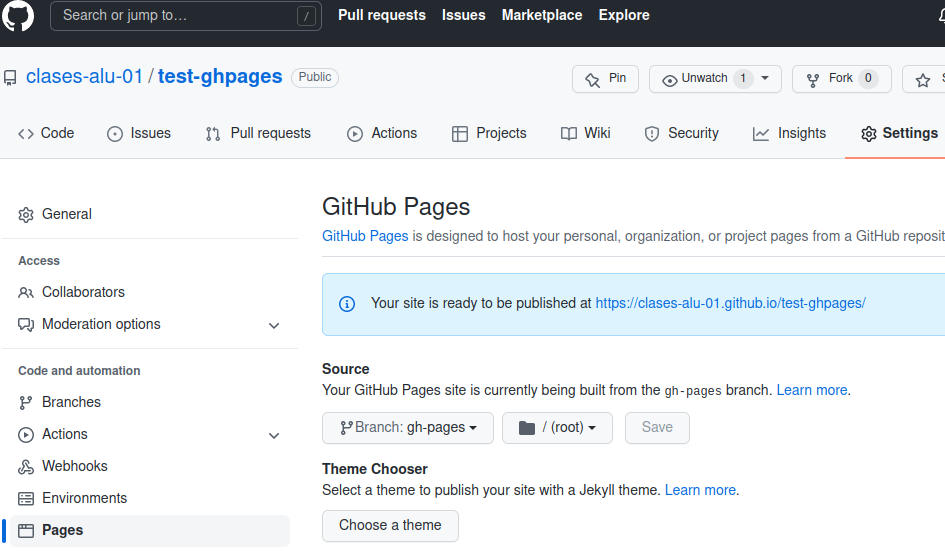
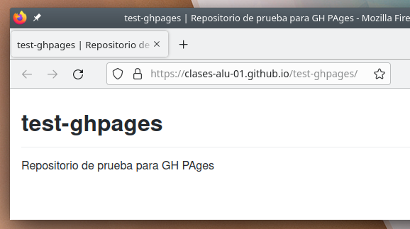
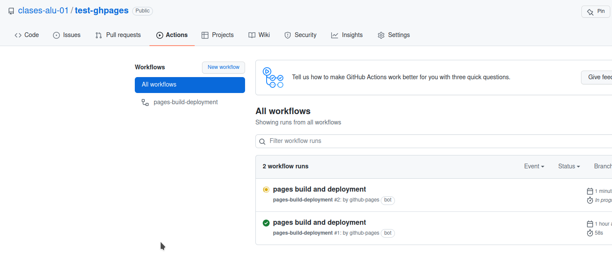
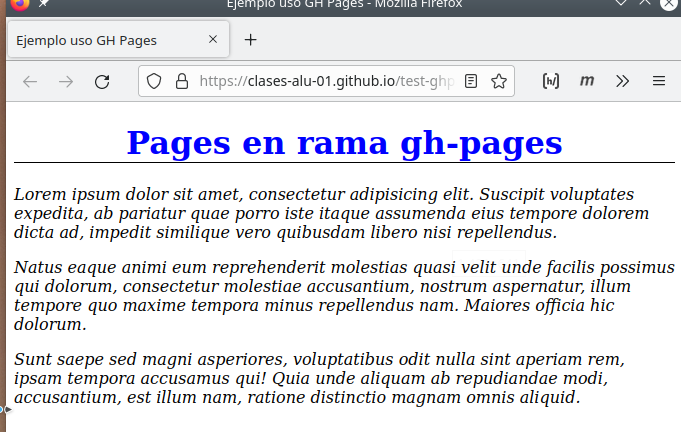

GitHub Pages¶
Tenemos dos opciones:
- página por usuario: tendremos una URL similar a username.github.io
- página por repositorio: tendremos una URL similar a username.github.io/repositorio
Usaremos la segunda: la idea es que la documentación del proyecto vaya junto con el código en el mismo repositorio.
1. Configurar Pages en repositorio¶
El primer paso, crear el repositorio. El segundo configurar Pages, que están desactivadas por defecto. Debemos ir a Settings del repositorio y seleccionar la rama que será el origen (source) de Pages:
Tenemos varias opciones:
- Seleccionar la rama que ya existe,
main, y decidir si los ficheros estarán en la raíz de dicha rama o en el directoriodocs. - Crear una rama específica para Pages (en el apartado Code), por costumbre
gh-pagesy usarla como fuente.
Vamos a crear la rama 'gh-pages' y en ella usaremos la raíz, root.

Vemos como se muestra la URL de publicación, en este caso https://clases-alu-01.github.io/test-ghpages/. Y si accede con el navegador verá que muestra una página inicial, tomada del README.md que hay en dicha rama: Pages por defecto busca un index.html, un index.md y si no los hay README.md.

Para publicar el proceso sería:
- Hacer clone del repositorio en local.
- Trabajar en local en la rama
gh-pagesy crear nuestros ficheros HTML, CSS, añadir imágenes ,etc. - Hacer commit de los cambios
- Hacer
pushal repositorio en GitHub - Comprobar con el navegador (recuerde que tras el push hay que esperar un poco, alrededor de un minuto)
2. Clonar¶
Vamos con el primer paso, clonar:
clases@vm:~/tmp$ git clone https://github.com/clases-alu-01/test-ghpages.git
Clonando en 'test-ghpages'...
remote: Enumerating objects: 3, done.
remote: Counting objects: 100% (3/3), done.
remote: Compressing objects: 100% (2/2), done.
remote: Total 3 (delta 0), reused 0 (delta 0), pack-reused 0
Desempaquetando objetos: 100% (3/3), 635 bytes | 635.00 KiB/s, listo.
clases@vm:~/tmp$ cd test-ghpages/
clases@vm:~/tmp/test-ghpages$
main y no aparece la rama gh-pages. Podemos listar con el parámetro -r. Luego cambiamos a la rama gh-pages con git switch:
clases@vm:~/tmp/test-ghpages$ git branch -l
* main
clases@vm:~/tmp/test-ghpages$ git branch -l -r
origin/HEAD -> origin/main
origin/gh-pages
origin/main
clases@vm:~/tmp/test-ghpages$ git switch gh-pages
Rama 'gh-pages' configurada para hacer seguimiento a la rama remota 'gh-pages' de 'origin'.
Cambiado a nueva rama 'gh-pages'
clases@vm:~/tmp/test-ghpages$
3. Editar la web¶
Ya podemos trabajar en local. Con un editor creamos una página index.html con algo de texto y la enlazamos con un fichero de estilos, estilos.css. Al crear estos ficheros puede comprobar que no están en el staged con git status:
clases@vm:~/tmp/test-ghpages$ code .
clases@vm:~/tmp/test-ghpages$ ls
estilos.css index.html README.md
clases@vm:~/tmp/test-ghpages$ git status
En la rama gh-pages
Tu rama está actualizada con 'origin/gh-pages'.
Archivos sin seguimiento:
(usa "git add <archivo>..." para incluirlo a lo que se será confirmado)
estilos.css
index.html
no hay nada agregado al commit pero hay archivos sin seguimiento presentes (usa "git add" para hacerles seguimiento)
clases@vm:~/tmp/test-ghpages$
Los añadimos al staged y hacemos commit:
clases@vm:~/tmp/test-ghpages$ git add estilos.css index.html
clases@vm:~/tmp/test-ghpages$ git commit -m "Primera versión web"
[gh-pages f037a5e] Primera versión web
2 files changed, 26 insertions(+)
create mode 100644 estilos.css
create mode 100644 index.html
clases@vm:~/tmp/test-ghpages$
4. Subiendo la web¶
Y finalmente hacemos push:
clases@vm:~/tmp/test-ghpages$ git push origin gh-pages
Username for 'https://github.com': clases.alu+01@gmail.com
Password for 'https://clases.alu+01@gmail.com@github.com':
Enumerando objetos: 5, listo.
Contando objetos: 100% (5/5), listo.
Compresión delta usando hasta 8 hilos
Comprimiendo objetos: 100% (4/4), listo.
Escribiendo objetos: 100% (4/4), 1.01 KiB | 1.01 MiB/s, listo.
Total 4 (delta 0), reusado 0 (delta 0)
To https://github.com/clases-alu-01/test-ghpages.git
44c952d..f037a5e gh-pages -> gh-pages
clases@vm:~/tmp/test-ghpages$
5. Probando¶
Tras hacer el push hay que esperar (alrededor de un minuto) a que se haga el despliegue que se realiza con Actions, puede ver el progreso en dicha pestaña:

Y una vez terminado ver el resultado en el navegador:

Ampliación: si quiere ver los detalles de cómo se ha construido el sitio web puede acceder a la pestaña Actions, hacer clic sobre el workflow más reciente (con el título pages build and deployment) y acceder al build donde se pueden consultar los detalles (en la figura 09 se muestra el paso "Build Page with Jekill").
{kind=link}
{kind=link}
{kind=link}
6. Enlaces¶
7. Anexos¶
7.1. Ejercicio GH Pages¶
Crear con GitHub Pages una página de repositorio (o de usuario) en su cuenta de GitHub. Añada estilos CSS y alguna imagen a la página HTML. Guarde la URL del repositorio
7.2. Usando directorio docs en main¶
GitHub nos da la posibilidad de publicar páginas HTML en la raman main usnado el directorio docs. Para ello:
- Crear repo
test-demo-pages - Activar Pages en rama
mainusando la carpetadocs. - Clonar repositorio en local.
- Crear directorio
docsy añadir y editar ficheroindex.htmlconestilos.css. - Subir los cambios a GitHub y probar la URL que nos indica Pages que será similar a
http://<usuario>.github.io/<repositorio>